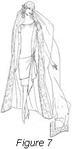

1926—The New-Way Course in Fashionable Clothes-Making
Lesson 41—What to Wear and When to Wear It
Correct Clothes for Every Occasion
To wear beautiful, becoming clothes is not enough. To wear clothes that are an expression of one's own individuality is not enough. There is something that is more important than fashion, attractiveness, personality—something more significant than any or all of these.
You would not expect the man of good taste and judgment to attend a formal dinner in street clothes, would you? Nor would you expect a young woman to wear her shopping dress to the formal dance. Clothes are governed by the occasion—and if one would be considered a person of good taste, one must heed carefully the dictates of correct dress.
There are certain "unwritten laws" governing the clothes worn at a wedding. Mourning, for instance, is considered a breach of good form—an indication that the person is lacking in good taste. For that reason, people in mourning are not expected to accepted wedding invitations. Similarly, there is definite, correct dress for the dance, the tea, the dinner, the theatre—every occasion of everyday life.
And so we find that in addition to our knowledge of fabrics, design, the creating of clothes and the conforming to certain individual types, there is also the important question of correct clothes for every occasion. Without his knowledge, one cannot truly be called an expert modiste—a fashionable creator of beautiful clothes. It is not for oneself alone that the knowledge is important; but if the clothes-maker ever makes clothes for others, she must know what principles to embody in the evening gown, how the tea gown should be made, what type of dress is appropriate for street or theatre wear.
It is really a study in itself—this consideration of correct dress. We know you will find it fascinating. By telling you exactly what to wear to the wedding, dance, theatre-party or dinner, it increases your poise, your self-confidence. It will enable you to avoid embarrassing inconsistencies in dress—and show you the way to be always, a all times, dressed in accordance with the requirements of the occasions well as the requirements of fashion.
We all want to know exactly what to wear and when it should be worn. This lends ease of manner and a sense of poise that is never manifested by the person who is uncertain as to the right kind of costume to be worn. It is far better to wear a simple dress when in doubt, for it will not be conspicuous and out of place, whereas a very elaborate dress worn where a neat plain dress would have been best, always makes a person feel and act self-conscious and rather out of place.
It is for this very reason that I want to say a few words to my students about the clothes to be worn for different occasions. Of course, good judgment must be combined with all rules and regulations, but then I need not worry about this, for I know that part will be taken care of.
Most people in moderate circumstances like to plan their ideal wardrobe. Sometimes most of it is taken out in planning, but even that is fun. It is up to all of us to come back to earth after this wonderful Fashion dream and meet the ideal as near as possible with the amount of money we are able to spend.
I wonder if you have been keeping a budget. If you have, you will know exactly how much you can afford to spend for clothing. After knowing this point it is an interesting game to see how many pretty clothes can be made from this amount of money.
If you have only a limited amount of money to spend for clothes, it is far better to make very simple dresses. They may be made more elaborate by means of detachable collar and cuff sets, for in this way the dress may be made to look quite different.
A plain dark blue silk dress may be made to look very tailored with plain white collar and cuffs made of linen or pique, or it may be worn to the theater or to luncheon simply by adding a frilly, lacey collar and cuffs.
You have probably seen the reversible coat. It is not worn every year, but when in style it will serve two purposes very nicely. It may be made of plaid material on the outside and a plain material on the inside. The coat is so made that it may be turned and makes a very pretty coat for dresses as well as sport wear.
Now let us take special places or occasions and decide just what is best to wear. Always bear in mind that it isn't the amount of money put into the dress; it is the common sense combined with skillful workmanship and design that makes the dress attractive.
At Home
I see no reason why we shouldn't start planning our clothes from the minute we get up in the morning. Of course the needs of all of us are not the same. If you are employed you will have little time to slip into an attractive dress and enjoy the time around home. However, we will take the person who does stay at home as our example and decide what she should wear.
It seems to me that the clothes one wears at home are really the most important dresses of the whole wardrobe, for those nearest and dearest see you in these dresses and they should be very neat and attractive. When there is housework to be done a dress simply made of gingham or percale is most practical.
Of course, you will make your own house dresses and the time used in making these dresses is well spent. It really is interesting to experiment with them and learn the different little touches which may be added to make them neat, practical and attractive. It is very necessary to keep the laundering problem in mind. In order to make sure they will launder well, choose materials which are the least liable to fade. If in doubt set the color, as already suggested, before the dress is washed. Do not make your house dresses so elaborate that they will not withstand the wear and tear of many visits to the tub.
Now let us decide what to wear in the afternoon if you are staying at home. Even if there are no guests coming or you are not going out you will feel a great deal better and your day will be more interesting if you change to some simple, becoming frock after you have finished with your housework and the last dish from the luncheon has been placed safely in the cupboard. This dress may be made of soft silk material or, of course, cotton dresses of voiles, or dotted swiss, linen or gingham are pretty.
These afternoon dresses and porch frocks which you wear at home, or when calling on your neighbors, on a nice summer afternoon, may be colorful and I have said so many, many times, a touch of hand embroidery does add so much.
I am sure you have seen people wearing the worst looking old shoes around the house. It may be necessary to wear old shoes, but there is little necessity in having them run over at the heels. Shoes should be kept in good condition, for they add much to your appearance.
If you are expecting guests, of course you will want to wear a dress in keeping with those worn by your friends. Often made-over dresses are very attractive, and a last year's dress may be made to look like the present-day styles with a very little work. If you are preparing the meal yourself the dress may be protected with a large apron, then when you sit at the table with your guests, the apron is removed and you find yourself dressed the same as the guests.
The Business Girl
Women in business should be extremely conservative in dress, wearing clothes with simple good taste. The well-dressed woman gives the appearance of being well-dressed without anyone stopping to think what she is wearing. There is nothing gaudy or glaring in her attire.
However, the business girl need not confine herself to severely tailored suits and high-necked blouses. She may express her art and taste in clothes just as freely as the woman whose clothes are judged from the social viewpoint. Indeed, she has the opportunity of showing just as good taste as any other woman—for in business she has the opportunity of combining common sense with correct fashion.
In making style selections, the business woman should avoid all "fads." She should never select the type of garment that will probably be worn a month or two and then discarded as hopelessly out-of-date. Anything extreme is in bad taste. Gaudiness and elaborate attire are detrimental to the ultimate success of the woman in business.
The woman who wishes to be strictly tailored, should wear a smart suit of English tweed. Heather is a good color as is also a grey or brown mixture. Suits of this kind should be worn only with plain white voile or white batiste blouses such as was made in the previous lesson.
Dresses for the business woman should be dark-colored and simply-styled. One-piece dress are ideal and every business woman should have at least two. With dresses of this type a small toque or turban should be worn, black or tan shoes, or oxfords, and a very plain but smartly styled coat.
Of course the real standbys of the business woman are the tailored suit and the one-piece dress. In the winter time a dark dress is always nice and can be changed by adding collar and cuff sets of linen, crepe de chine or pique. These sets may be made to fasten on quickly with snaps, for every business woman knows that every minute she can save helps a great deal.
For summer the business woman may wear dresses of dark silk or cotton material. Of course light dresses are always nice to wear, but there is always the laundry consideration. The light dresses are worn a great deal in small towns, but in large cities where there is so much dust and dirt dark dresses are usually chosen.
The business girl should buy the most substantial quality of clothing and accessories that she can afford, because her clothes get such hard wear. It is often best for her to plan her outfit carefully so that the colors will go well together, and that all details of her costume fit in well with each other.
It is always considered bad taste to appear at the office with an abundance of cheap jewelry. It is perfectly all right to wear some jewelry, but cheap, showy ornaments should not be worn by the business woman, or by anyone else for that matter.
What to Wear to School
For little girls still in the grades, simple woolen dresses are very nice. They may be made with detachable collars and cuffs. Plaid wool collars and cuffs would be pretty on a blue or brown wool dress; then these may be taken off and linen or silk collars and cuffs applied. This makes a nice change and at the same time is very neat. Middy blouses or other over blouses worn with a plain or plaited skirt are practical and when well planned and made will serve for almost every occasion. Gingham dresses are appropriate and serviceable for spring.
Felt hats stand a great deal of hard wear, so of course are very serviceable for winter wear and may be worn until late in the spring when a neat straw hat may replace it. Bright colored coats are attractive and are nice for school. Of course when choosing the coat, be sure that it is practical and durable. Sweaters are sometimes appropriate and are nice to wear in spring and fall.
The high school or college girl will find that her clothes problems are much the same as the business girl. However, she can wear all kinds of sport clothes and she can choose bright colors for her wardrobe; that is, she will find more use for the bright colors than the business girl.
Street and Shopping Clothes
For walking or shopping, there can be nothing more appropriate than a smart, tailored suit worn with a neat blouse of French voile or batiste. The woman of good taste is never conspicuous, never gaudy. Her clothes are always well made and fashionable, and they are always appropriate to the occasion where they are worn.
If you do not care for the tailored suit, a plain dress is always appropriate. Be careful not to overdress for any occasion, always be neat but have your clothing in good taste. Many people prefer a one-piece dress to a suit. Dark wool or silk is the best to choose for a dress. In cold weather you of course will wear your coat, while in the spring and fall it can be worn without a coat, but a scarf or fur will add a great deal to it.
Ensemble suits are smart, and not only that, they are very practical. When choosing a suit of this kind try to get one with a plain coat so that it may be worn with other dresses. Unless you have had an ensemble suit you will never know how much good you can get out of it and how very practical it really is.
The hat should be by all means becoming; it should not be real tailored nor should it be elaborate. In fact, you should choose an in-between hat of felt, satin or velvet, depending on the season.
Shoes should be carefully chosen, for they should be comfortable. Do not attempt to wear high heels if you are on your feet a great deal. A medium or Cuban heel is appropriate for walking and at the same time is comfortable.
Sport Clothes
In this day and age, sports clothes are just as important as any other type of clothing. To be sure, the term has a rather broad interpretation. It is the kind of clothing worn most at country resorts and hotels and is very appropriate for picnics, outings, motoring, golf, tennis, etc.
It is usually made of jersey or tweed or heavy cotton or linen or sometimes silks. Gay colorings are used in sports attire; in fact, a dull colored sports dress is seldom seen.
If you wear sports dresses you will need a sport coat of homespun tweed, or whatever material is being featured that season. Sweaters and skirts are also used a great deal as well as the knitted sweater suit. Choose very plain hats for sports wear. They may be of most any hat material, but is entirely different from the hat worn for other occasions. It is usually of felt, for this kind of a hat will stand rough treatment and come through in the best condition.
Fairly heavy shoes should be chosen for sports wear. They should have a low or medium heel and, above all, should be very comfortable. No one can enjoy a game of golf if the shoes are tight, for much walking is tiresome if one is not comfortable in every way.
Knicker suits are sometimes worn, usually for hiking and camping. These are made of khaki cloth or of tweed material. They are also nice for mountain climbing, for skirts are always in the way at a time like this.
Sports clothes should always be comfortable, and at the same time bright and attractive. Do not be afraid to wear bright colors. Choose them carefully, however, so that they are becoming to your particular type.
Afternoon Affairs
The more dressy type of frock should be chosen for church, formal luncheons, afternoon teas, calling, club meetings and matinees.
The material chosen for this dress depends a great deal on the season of the year. In mid-winter the material may be velvet, satins, crepes or novelty silks. In summer fine materials may be selected.
The type of sleeve depends on the kind worn at the particular season. Sometimes Fashion calls for short sleeves, either elbow length or shorter; then again the sleeves are long.
The shoes may be black patent leather, kid or the light colored kids which are so popular.
The hat should be of the dressy type and the gloves may be white or colored.
Clothes for Tea-Time
Both France and America, tea-time is considered the most fashionable time of the day. It makes no difference whether the tea be formal or informal—one is expected to wear one's prettiest and most becoming frock.
In summer, one wears delicate, dainty frocks of light, gay-colored materials. In winter one wears frocks heavier and more substantial in the weight of material.
One of the most favored materials for the afternoon frock—which is also the tea-time frock—today is satin. Chiffon, crepe de chine, georgette—or a combination of any two of these—are also favored. Colors vary from the deepest tones of brown to the brightest shades of green. As Fashion is almost always in a colorful mood you should have no trouble in selecting and combining colors that are individually becoming, and at the same time appropriate.
The young girl who goes a-teaing may wear a dress made simply of soft folds of the material, finished with a huge sash and bow of tulle or chiffon. When one is older, the dress may be beaded georgette or embroidered satin—whichever is most becoming.
If the tea is given in honor of one's debutante daughter, she should wear a gown that is at once simple and dainty, cut quite low in the neck and boasting tiny sleeves. It is very becoming if it is of georgette in a very pale pastel shade.
Lawn Parties and Garden Fetes
Just as one expects flowers in the springtime, so does one expect frivolous little frocks at the lawn party or garden fete. Nothing less than a gay little summer frock, a parasol to match and a flower-trimmed hat will harmonize with the garden or lawn background.
For the garden-party frock, there can be no material more ideally suited than crisp organdie. And this is especially true when the color of that organdie is orchid or Nile green. The dress may be as simply or elaborately styled as one pleases, but one particularly pretty little frock I have in mind was trimmed solely with a profusion of tiny pin-tucks on the skirt and around the neck. Silk floss embroidery added a touch on contrasting blue (the dress was of orchid) and the silk tie was of blue to match.
Of course, this would not be an appropriate dress for the older woman. For her, we suggest a dress of dotted swiss, crepe or French lawn. The color should be light, but the style simple. Sunset yellow has, somehow, the propensity of being attractive both to youth and age; lilac is ideal for the older woman; black should never be worn to a garden party or fete. Styles may be simple, but colors should always be as gay and rich as the colors from Nature's very own palette.
For Evening Wear
The Dinner Dress
The regard for correct dinner dress is more marked in the city than it is in the country. City life has a certain strict formality which is entirely lacking in the country, yet which one invariably finds at such important country occasions as church festivals, subscription dances and dinners given in honor of celebrated guests.
The woman who receives formal dinner invitations should have at least one evening dress in her wardrobe. If she is tall and slender, she should choose a bouffant style—and it may be made of a soft, clinging material or taffeta if one prefers. Of course, one would not wear an evening gown of this kind to a chummy little dinner where all are the closest friends, but only to pretentious, formal affairs where everyone appears in "full dress."
If one is inclined to be the least bit stout or short, the slender silhouette should be chosen. It must be developed of a soft material, such as satin, silk brocade or any other soft, silken material. Lace is appropriate, also. This type of gown should be made with long lines and straight panels.
In selecting materials and colors for evening gowns, one should bear in mind the requirements of the individual, as taught in an earlier lesson in the course. Absolute harmony between the gown and the personality of the wearer is essential. For the older woman, we suggest jet; for the younger woman gold lace or gold tissue. The gown should have a train only when it is extremely simple in design; an elaborate gown because gaudy when a train is added to it.
The Dance Dress
One does not attend dances unless one wishes to put oneself into the spirit of the dance and respond to the rhythmic cadences of the music. To be appropriate, one's dress must be in accord with the occasion—and to be in accord with this gay, happy occasion one's clothes must be bright-colored and attractive.
When the dance is held in the afternoon, the young person should perhaps wear a gown of organdie or taffeta, extremely youthful in style, for dancing and youth go hand-in-hand, you know! The gown may be a combination of colors or just one pale pastel shade. It should be trimmed gaily with flowers or ribbon.
For the older woman, it will be necessary to select a gown more suited to her years. Canton crepe, crepe de chine and satin are widely in vogue, and trimmings are usually gay in note—although the style of the dress may be somber to match one's tastes. Navy blue taffeta trimmed with silver cloth is ideal for the older woman at the dance.
The evening dance assumes the more pretentious and dignified name of "ball." Clothes, to be appropriate, are therefore more elaborate. One may wear one's most elaborate evening gown, if one is older. For the very young person the lines should be bouffant and youthful; a pretty frock would be of soft green or soft rose chiffon velvet trimmed with bands of silver ribbon. It may be sleeveless or with tiny sleeves.
The young miss who is introduced for the first time to society at a ball should wear a gown either of white or a delicately tinted shade. The most popular materials are tulle, net, chiffon or silk georgette. The neck is often cut in a heart-shape and the dress usually has tiny sleeves.
Dress at the Theatre
There is a very discouraging tendency to over-dress at the theatre. The place for gay dress is in the ball-room or at the formal dinner—not at the theatre.
When you attend the matinee wear a simple street dress of dark material. During the summer months, daintier fabrics and lighter colors are permissible. Avoid ostentation and gaudiness; dress that is worn in public should always be simple.
Evening dress is worn to the theatre when one sits in a box. This evening dress should not be as elaborate or as decollete as the dress worn to the formal dinner or dance. Those who sit in the orchestra may wear full or semi-evening dress as they desire—but those occupying the less expensive seats should wear plain street clothes.
The very same principles of correct dress that apply to the theatre apply to the opera too.
The Wedding Gown—and Trousseau
There is a certain fascination in making a wedding gown, in planning a trousseau, in creating dainty, much-beribboned wedding things. Let us first have a little chat about the trousseau and find out just what is correct for this all-important occasion.
Of course, when we think of a trousseau we think quite naturally of billows of creamy white linens, of exquisite under-things, of beautiful embroideries. But these items must be dependent entirely upon the individual—upon the extent of one's purse and the demands of one's taste. What we are chiefly interested in is the wedding gown itself. How shall it be made? What shall the material be?
White is the color for brides. Since time immemorial this has been the color used to denote purity. The exclusive use of white for brides is supposed to have grown out of an old custom of the ancient Patagonians who covered the body with white paint on the eve of the wedding ceremony. The material used may be heavy crepe de chine, white brocade or satin—preference being given the latter.
As for style, always remember that the greatest charm of the bridal gown lies in its simplicity. A gown that is elaborate defeats its own purpose, and is an indication of poor taste. The occasion is a solemn and dignified one—and the gown should be made extremely simple to harmonize with the occasion.
Most wedding gowns are made with a train and the skirt is almost always draped. For evening weddings, the gown may be sleeveless. The veil may be either of tulle or lace.
But what should the trousseau contain, you persist? To list the articles that should be included in the trousseau would be as ridiculous as it is impractical—for this is a matter which is entirely dependent upon convenience, circumstances and personal preferences. We can only make suggestions which may be followed as one thinks best.
There is something strangely beautiful in the thought of making one's trousseau. Indeed, there is an old tradition to the effect that the bride who makes her own trousseau "sews happiness into the wedding outfit." The garments included in the trousseau should be sensible, useful things. Everything useless and merely ornamental should be omitted. Undergarments should be made, with a regard for wear and utility. Linens should have deep hems finished with neat hemstitching instead of flimsy laces or embroideries. Household and personal linens should be embroidered in the bride's maiden initials.
If a honeymoon trip is planned, the trousseau should contain at least one smart dress of serge or poiret twill for street wear; an afternoon frock or two of georgette crepe, satin or taffeta; an evening gown for the important occasions; a semi-evening dress conservative in style; a dark-colored suit with several gay little blouses. However, these are merely suggestions and may be followed as one sees fit.
What to Wear to the Wedding
Now let us see what the wedding guest is expected to wear. Surely, one does not wish to draw attention to oneself by being incorrectly dressed at so important an occasion as a wedding?
If the wedding is held in the morning or afternoon, the gown should be of satin, georgette or taffeta. Some of the newest modes favor lace. Sleeves should be elbow-length or full-length. The style of dress depends upon the figure of the person and upon the prevailing fashion. Elderly women should select dark blue or brown, but for the younger women the lighter shades are preferred for the early wedding.
Then there is the evening wedding, resplendent with the colorful gowns of fashionable women. Here one wears one's "best"—for the evening wedding is considered formal. Elaborate decollete is usually worn if the wedding is held at church, although one need not be so formal for a small home wedding. The style of the dress may be either bouffant or straight-line, according to the requirements of the individual figure. Only the finest silk materials are used for evening gowns.
Because it is a beautiful occasion, one is expected to wear beautiful clothes to the wedding. By beautiful clothes we do not mean elaborate clothes, necessarily—but clothes that are well-made, well-finished and with just enough charm and artistry in their construction to do justice to the solemn dignity of the occasion.
What to Wear When Traveling
For traveling choose a dark dress which will not show the dust. A semi-tailored type is perfectly correct. A Pullman robe of dark-colored material to wear from the sleeper berth to the dressing room is considered much better than the gay kimona which is so often seen.
If you are traveling on a boat you will need more clothes than by train. On shipboard one usually dresses for dinner, not always a formal dress, but one a little more dressy than the one which has been worn during the day. Semi-tailored or sports costumes are best for daytime wear on shipboard. Always choose a warm coat, a plaid is always pretty, especially when it has a large fur collar.
For Mourning
When there has been a recent death in the family, mourning is sometimes worn. This is done as a sign of reverence and as an expression of sorrow. During this time pleasures are given up for a certain length of time, and one of these pleasures is fancy clothes.
A neat, simple frock of black is usually worn. No trimmings whatever, not a touch of color. All black and severely simple in style. Widows wear long crepe veils falling almost to their knees. No jewelry is worn except a dull jet pin if one wishes it. After a year, the widow may wear white or lilac combined with the black, but it is not considered correct to return to bright colors until after a period of two years has elapsed.
Mourning is not being worn as much as it was years ago. It is a matter of opinion whether it should be worn or not and must be decided by the individual. If a person does not wear mourning it is not necessarily a sign that she does not feel the loss of her dear one, for, after all, feelings are within the individual, and the wearing of dark clothing does not lighten the burden nor help one to forget the great loss.
Women everywhere are realizing more and more the value of correct dress for every occasion. It is so comforting to know just what to wear. It is also a great satisfaction to know how to make these pretty dresses and coats, for without the aid of our trusty friends, needles, pins and threads, combined with willingness, determination and good judgment, many of us could not have appropriate things for every occasion even if we did know "What to Wear and When to Wear It."
Lesson 41
Questions
- If in doubt as to what to wear, would you choose a simple or elaborate dress?
- If your income is limited, what kind of dresses would you choose?
- Why are the clothes one wears at home so important?
- Why should shoes be kept in good condition?
- What styles should business women avoid?
- What are two real standbys of the business woman?
- What kind of hats stand a great deal of wear and are serviceable for the school girl?
- With whose initials should the bride's linen be marked?
- What kind of a dress would you choose for traveling by train?
- If traveling by boat, what type of costumes are best for daytime wear?